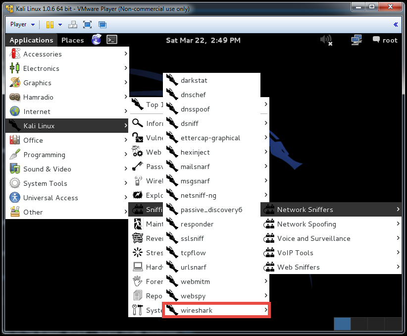

Please do not do any of the homework attacks that use ARP spoofing on the school network. We think that MSU is watching the ARP cache and not allowing all of the attacks to work. If you don't have access to another network, just turn in the command line arguments that you think you should have run.
For this part of the homework we will be looking at a man-in-the middle attack involving the intecepting and sniffing of HTTP packets that were not originally meant for you. By making use of a sniffing tool combined with what is known as an ARP attack, we can both intercept and read packets that were meant for a different machine on the network. After you are done reading these packets you can forward them to the intended machine leaving the victim none the wiser.
We don't expect it to take this long to complete part 1 of the homework, but if you find yourself spending more than 3-4 hours on it, please ask us for help. We don't want anyone to be stuck for too long.
You can use this document to fill in your answers so that you know exactly which information you need to submit.
You will first need to get your Kali Linux virtual machine setup. We have directions for using VMWare Player and VirtualBox.
For this part of the homework, you will monitor different types of network traffic and report what you see. You will use the "wget" command to download some apps that we have created for you to use, so just make sure that you are downloading them into the directory that you want. Make sure you have execute permissions for the files you download (chmod +x).
Run Wireshark during these sniffing exercises.
It can be found under Applications -> Kali Linux -> Sniffing/Spoofing -> Network Sniffers -> wireshark.
You may get some errors about certain libraries failing to load or warnings about sniffing while being root but these can be ignored.
Select the network "eth0" which is the main ethernet network for the VM and click "Start"
You can filter what you see in Wireshark by using the filter field near the top of the application. You can type into it manually or right click on items in the list and add filters based on them. For example, it will be useful to filter by IP for this part of the homework.
TCP Sniffing
TCP sniffing will allow you to see low level individual packets that are being sent across a network.
Run "wget http://mitm.azurewebsites.net/AzureSite/files/tcp_client.bin"
Run "tcp_client". This will send TCP traffic for you to monitor.
Observe the traffic in Wireshark and report the following
HTTP Sniffing
HTTP sniffing will allow you to see higher level web requests being sent across a network. Under the hood, each of these HTTP requests is made up of multple TCP packets.
Run "wget http://mitm.azurewebsites.net/AzureSite/files/http_client.bin"
Run "http_client". This will send HTTP traffic for you to monitor.
Observe the traffic in Wireshark and report the following
HTTPS Sniffing
HTTPS sniffing will allow you to see higher level web requests similar to HTTP requests. The requests payload in these cases are considered secure and will appear encrypted.
Run "wget http://mitm.azurewebsites.net/AzureSite/files/https_client.bin"
Run "https_client". This will send HTTPS traffic for you to monitor.
Observe the traffic in Wireshark and report the following
Decrypting Messages
We will first look at a simple example of how you can use OpenSSL to decrypt a message. It's very similar to how it happens during a secure SSL tranmission between a browser and a website.
Run "wget http://mitm.azurewebsites.net/AzureSite/files/openssl_decrypt_homework.tar.gz".
Run "tar -xzvf openssl_decrypt_homework.tar.gz".
Use "openssl" and the key that you just downloaded to decrypt the message that came with it. What is the decrypted string?
OpenSSL Configuration
For this part of the homework, you will be looking at how OpenSSL is setup on a Linux server that we have created. You will then establish a connection with that server based on the information that you find. The server's IP address is 138.91.119.153.
Run "sslscan" on the server.
How many ciphers are accepted?
What are the server's preferred ciphers?
Use "openssl" to establish a connection with our server using the EXP-RC4-MD5 cipher. Use Wireshark to capture this activity.
Turn in a screenshot of the "Client Hello" request with the "Cipher Suites" section expanded under the "Secure Sockets Layer". You can get to this information by double-clicking the message that you want to look at.
What was the "openssl" command that you used?
A DOS (Denial Of Service) attack is is when an attacker interacts with a server to make it perform some operation repeatedly with the hope of consuming most or all of the server's resources. These SSL DOS attacks are used in conjuction with many MITM attacks because some servers revert to less secure behavior when their resources are overloaded, whether it's by design or unintentional. An unlikely (hopefully) example would be a server reverting to HTTP traffic instead of HTTPS when the server's CPU usage goes above 90%.
For this part of the homework, you will be performing SSL DOS attacks on two different servers. The insecure server allows insecure renegotiation and the secure server does not allow it. Their IP addresses are as follows:
Insecure Renegotiation Allowed
What version of OpenSSL is running on the insecure server?
Hint: Use "openssl" similar to how you did above in the OpenSSL section, but perform a GET request on the webpage. Make sure that you find the OpenSSL version, not the SSL version.
Navigate to the insecure server's HTTPS webpage (https://137.117.84.81) and observe what it looks like and how it loads.
Use "thc-ssl-dos" to perform an SSL DOS attack on the insecure server. This is already installed in the Kali VM.
What is the max number of connections that you see?
After thc-ssl-dos reaches the max number of connections, reload the insecure server's webpage. How long does it take to load? Does it load like it did previously?
What was the command that you used to perform this attack?
Make sure that you close the "thc-ssl-dos" application so that others can continue to perform the attack.
Insecure Renegotiation Disabled
Use OpenSSL to attack the secure server
Hint: Remember that insecure renegotiation is not allowed on the secure server. The previous attack will not work since renegotiations will not occur repeatedly for the same connection. You will need to write a script that opens many secure connections with the server. Use the command that you used for the insecure server (step 18) as a starting point and open the connections in parallel. Use a supported cipher that has the highest number bits.
Bash script loops and background jobs may help you out.
You can redirect all output to /dev/null if you don't want to see a lot of output from the script that you're running.
You can view the current total percent of current CPU usage here to see if your attack is working: http://138.91.119.153/cpu.txt
Keep in mind that the page will not even load if your attack is working well enough.
Turn in the script that you used to perform the attack on the secure server.
Once again, make sure that you close your script if it is still running so that others can continue to perform the attack.
If your script left some processes running (check with "ps"), you can close all of them with a pattern to match the name (pskill -f "openssl")
Are Secure Sites That You Use Susceptible to SSL DOS Attacks?
Check three secure (HTTPS) sites that you use to see if insecure renegotiation is allowed.
After connection with "openssl", type "R" and hit Enter. If insecure renegotiation is enabled, you will see a new certificate being issued. If insecure renegotiation is disabled, you will see an error.
Report which websites you tested and whether insecure renegotiation was enabled or disabled.
Make sure that you use Firefox for this part of the homework. We did all of our testing in Chrome and it was working fine until the day before our presentation. An update to Chrome closed this hole and the attack was no longer possible.
For this part of the homework, you will be using "sslstrip" to "strip" out anything that makes an HTTPS request secure so that you can see the payload inside of it. The request can then be forwarded on as an HTTP request.
Run "sslstrip" simlar to how it was demoed in class. Forward TCP transactions from port 80 to port 1234.
On your host computer, navigate to a secure webpage such as the one you navigated to in step 31. Take a screenshot of the website's secure connection information now.
Attempt to login to that website and observe what is output to your sslstrip log file in the Kali virtual machine. Take a screenshot or report the text inside of that log file. You may not want to use real credentials when attempting to login.
You will need to know your host (victim) computer's IP address (according to your Kali VM) as well as the gateway's IP address. (This is basically acting as the router's address if you were attacking someone's computer on a public wifi network). You can find the IP address of your host computer by looking at the IP address shown in Wireshark while your host computer is performing some web activity. You can find your gateway (router) address by using the route -n command.
If you are having trouble getting things to work or seeing strange behavior, try restarting your Kali virtual machine and/or clearing your recent browsing history on your host computer. ARP spoofing can sometimes get things into a weird state and something needs to be reset.
TLS renegotiation allows a client and server who have already established a TLS connection to negotiate or exchange new parameters or keys. This can be exploited with a MITM attack. If you can put yourself into the middle of the communication between the client and server, you can use the existing connection to inject your own content. This can often be done without the client knowing it has happened.
For this part of the homework, you will be taking advantage of TLS renegotiation by injecting your own content in the middle of a connection between a client (Your host computer) and a server.
The server's IP address that you will be using is 191.238.51.50.
Run the following sequence of commands.
wget http://mitm.azurewebsites.net/AzureSite/files/tls_demo.tar.gz
tar -xzvf tls_demo.tar.gz
cd tls/
cp tls-renegotiation-poc.py /usr/bin/
tar -xzvf tlslite-0.3.8.tar.gz
cd tlslite-0.3.8/
python setup.py install
On your Kali VM, navigate to the server's webpage (https://191.238.51.50/mitm) and submit a log message.
Observe in your browser or Wireshark how the log message is sent to be stored. Hint: Look at the querystring parameters and request type (GET, POST, etc.)
Navigate to https://191.238.51.50/log.txt and observe how your message looks. You should see the OS that you used (Linux) and the message that you entered. Report this text.
Do the same thing from your host computer and you should see a different OS as long as your host computer is not Linux. Report this text.
Setup IP forwarding, IP table redirecting, and ARP spoofing similar to how it was demoed during the presentation
You will need the IP address of your host (victim) computer as well your gateway's IP address once again.
Use "tls-renegotiation-poc.py" to perform a TLS renegotiation attack on the server's webpage from the Kali VM that results in a message being logged on behalf of the host computer. Navigate to https://191.238.51.50/mitm on your host computer.
Report the new log text from the TLS renegotiation attack.
Even though the message is being injected from the Kali VM, the log should show that the message came from the host computer's OS.
The command that you run should be similar to...
tls-renegotiation-poc.py -l 8080 -b ATTACKER_IP -t SERVER_IP:443 --inject {YOUR_CONTENT}...where {YOUR_CONTENT} is the web request that you are injecting. This should be the same format as the web request strings that you passed to the openssl command previously. For example, a simple GET request could be "GET /". Hint: You can look in Wireshark for help with retrieving this string.
You may need to close the two "arpspoof" apps and the "tls-renegotiation-poc.py" app before you can use the internet normally on your host computer again.
Take a screenshot of Wireshark witnessing the TLS renegotiation attack.
What was the command that you used to perform the attack?